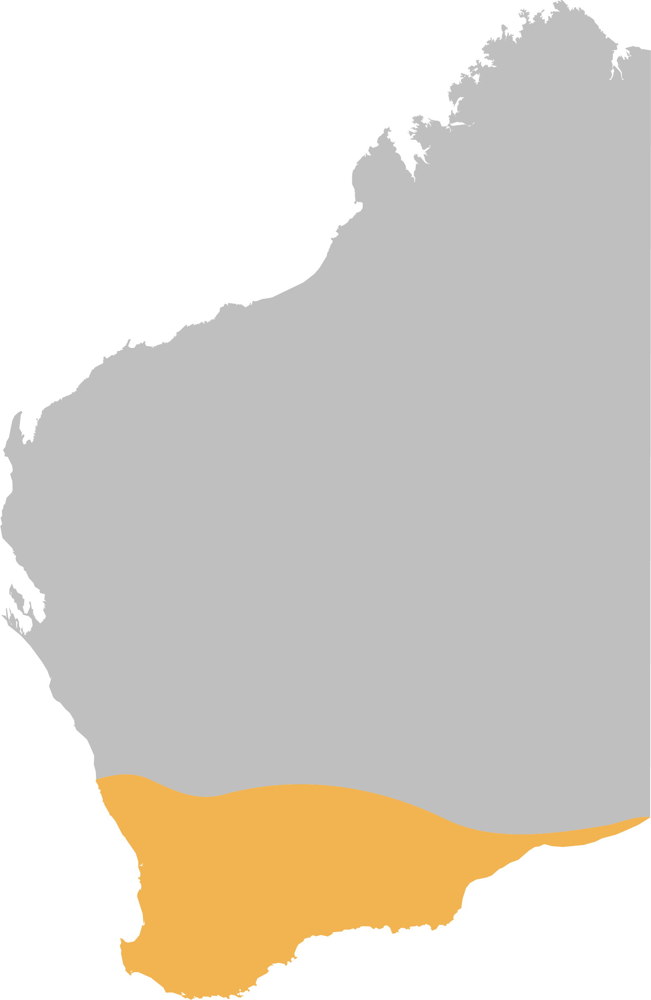

Red-tailed Phascogale
Phascogale calura
Conservation Status: Conservation Dependent (WA)
The red-tailed phascogale (Kenngoor in Noongar language) is a small, arboreal marsupial endemic to the semi-arid woodlands of Western Australia.
Agile in tree canopies, it is now mostly found in predator-controlled reserves and suitable woodland habitats.
Brush-tailed Phascogale
Phascogale tapoatafa wambenger
Conservation Status: Conservation Dependent (WA)
The brush-tailed phascogale (Ballawara in Noongar language; subspecies wambenger) inhabits forests and woodlands of southwestern Australia.
Recognised by its black brush-like tail, it feeds on insects and small vertebrates and nests in tree hollows.
Yellow-footed Antechinus
Antechinus flavipes leucogaster
Conservation Status: Least Concern
The yellow-footed antechinus (Mardo in Noongar language; subspecies leucogaster) inhabits forests and woodlands of southwestern Australia.
Energetic and mouse-sized, it is primarily insectivorous with a short breeding season.
Western Pygmy Possum
Cercartetus concinnus
Conservation Status: Least Concern


The western pygmy possum (Mandarda in Noongar language) is a tiny, nocturnal nectar- and pollen-feeding marsupial found across southern WA.
It plays a key role in pollination and shelters in tree hollows or dense foliage during the day.